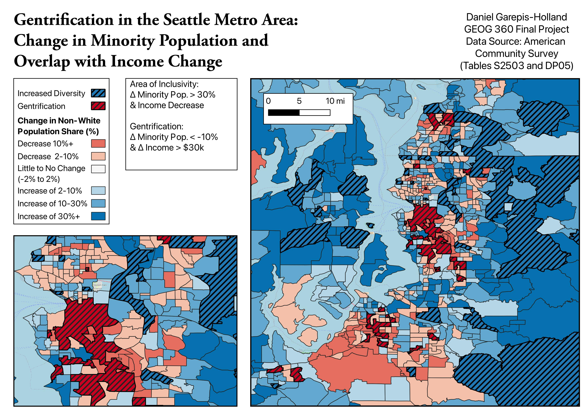
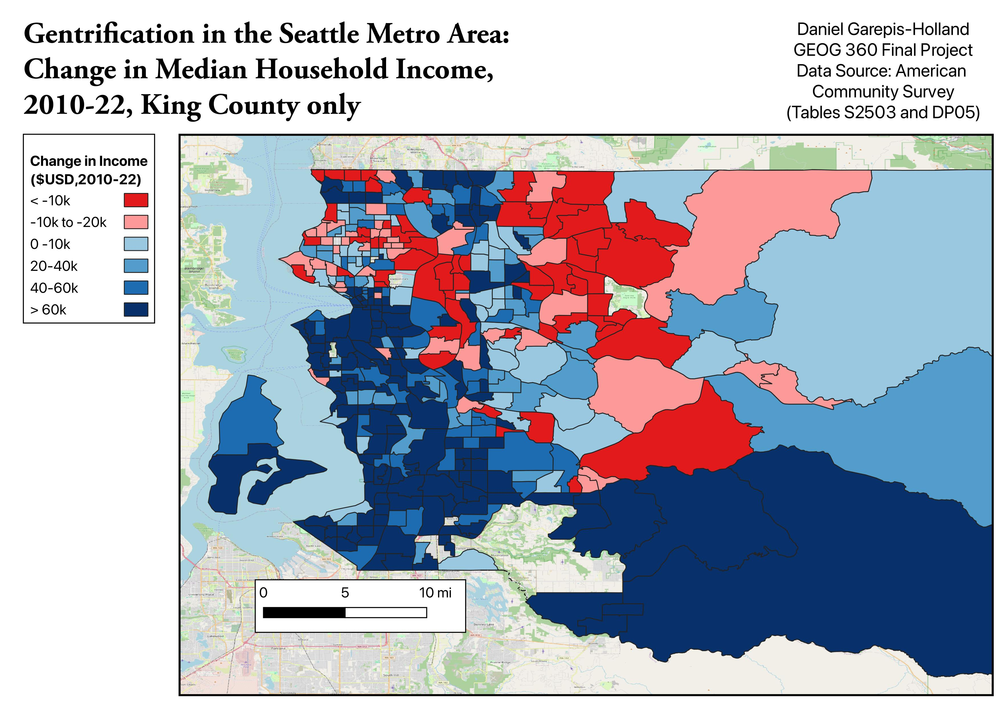

Expected June 2027
Seattle, WA
University of Washington
B.A. in Political Science and B.A. in Community, Environment & Planning
- Cumulative GPA 3.93, Dean's List
- CEP Outreach Committee, GeoDat Society, ITE Club, Kappa Alpha Pi
Creative work in photography, journalism, and design. Professional work in planning, policy, housing, and public communication.
Start here for the visual work: public space, campus rituals, sports, civic life, student journalism, and brand development.
Open full creative portfolioEducation and experience, most recent first. Projects follow, grouped by where the work was done.
Expected June 2027
Seattle, WA
B.A. in Political Science and B.A. in Community, Environment & Planning
Graduated June 2023
City of Brisbane, California
September 2024–Present
Bellevue, WA
Interlake High School, Bellevue School District
January 2024–Present
Seattle, WA
Housing & Food Services, University of Washington
June–September 2024
Hayward, CA
Eden Housing
June–August 2022
Oakland, CA
California Department of Transportation (Caltrans)
Work from my internship and coursework, grouped by where it was done.
Planning Intern, 2025 and 2026
Parking policy presentation work for a local Planning Commission meeting.
Agenda report and staff analysis for a local sign program amendment.
Open agenda reportCoursework and studio projects
Studio site planning work for a childcare feasibility study.
View archive entryStoryMap project on environmental conditions and neighborhood context.
Open StoryMapQGIS maps using ACS data to compare income and demographic change.


Policy writing on equity and school finance.
Open paperAudio project on Washington paid family and medical leave.
Open project notesPolitical science research paper.
Open paper